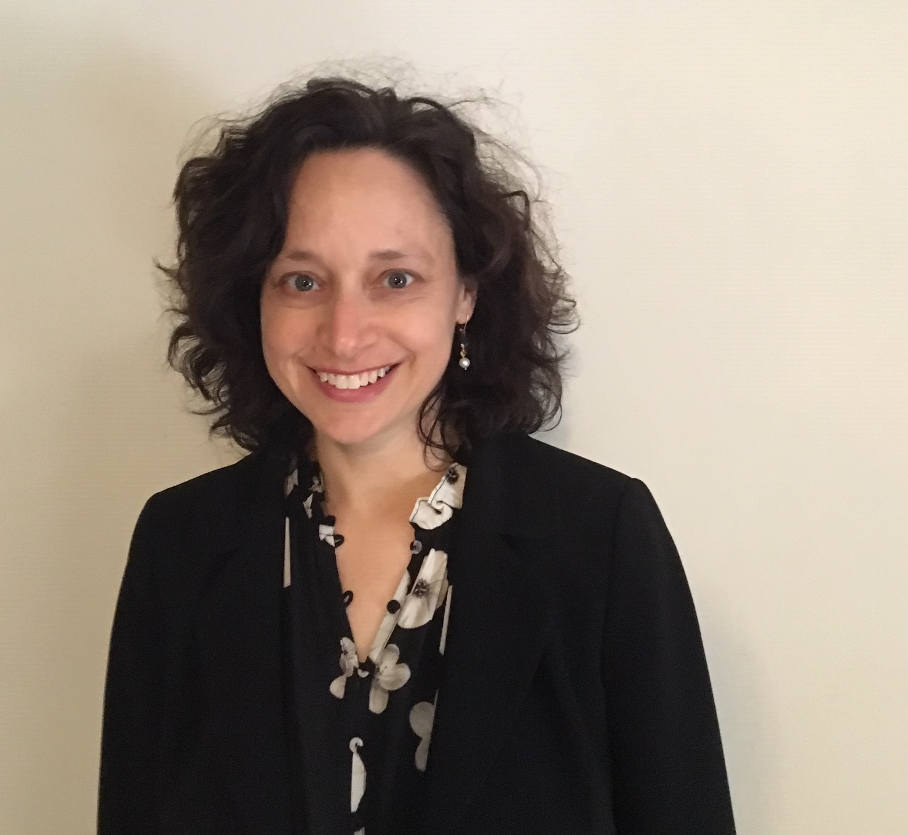

Lisa lives in the Greater Boston area with her family, including their dog, Stanley.

Lisa Girard is the Founder and Principal at Acropetal Science Strategy and Communications Consulting, working with scientists, startups, and organizations to help tell their story through content, pitch, and strategy development. Prior to starting her consulting practice in 2025, Girard served as the Director of Strategic Communications at Whitehead Institute.
A former bench scientist, Girard has nearly two decades of writing, communications leadership, and content-development experience including previous roles at the California Institute of Technology, the Harvard Stem Cell Institute (HSCI), and the Broad Institute of MIT and Harvard as their Director of Scientific Communication. Earlier in her career, she was HSCI's Associate Director of Strategic Alliances, as well as creator and editor of HSCI's StemBook and Caltech's WormBook.
Lisa lives in the Greater Boston area with her family, including their dog, Stanley.